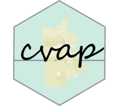

Distribute CVAP at the Block Group and Download Data
Source:R/distribute.R
cvap_distribute_censable.RdDownloads CVAP, block data, and block group data all together.
Calls cvap_distribute within.
Usage
cvap_distribute_censable(
state,
year = 2023,
clean = TRUE,
wts = "pop",
include_implied = TRUE
)Arguments
- state
character. The state to get data for or nation for the nation file.
- year
numeric. Year for the data in 2009 to 2023.
- clean
Should variable names be standardized? Default is TRUE.
- wts
'pop' (default) or 'vap' for the group to distribute by.
- include_implied
logical if a column for the implied total (
impl_cvap) should be included. Default isTRUE